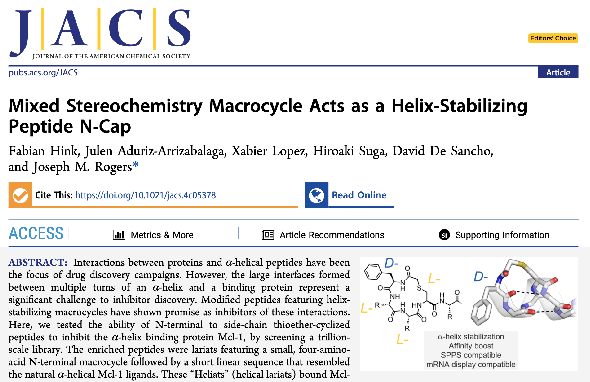

The Rogers Laboratory
at the University of Copenhagen 
Reprogramming nature's peptide-synthesis powerhouse, the ribosome, to synthesize highly non-proteinogenic peptides. Screening trillion+ libraries of cyclic peptides to isolate super-binders: molecules ready for use as research tools or for development into future drugs. Discovering molecules for unsolved problems in human health. Molecules, new in form, function, or both.

NEWS
-----
25 Aug 2024
Fabian's paper comes out in JACS. Nice one Fabian, beautiful work. Special thanks to our collaborators David de Sancho, Julen Aduriz Arrizabalaga and Xabier Lopez.
-----
9 July 2024
Our PhD student Jing wins a Daisy award for free NMR time. Well done Jing!
-----
28 June 2024
Maaike Storck, joint student with Rasmus Prætorius Clausen and Jette Kastrup, defends her Masters defence. She did a fantastic job.
-----
21 June 2024
Gustav Stærk defends his Bachelors thesis. Super job Gustav! Thanks to Sophie Beeren for examining.
-----
20 June 2024
Julia Jamka defends her Masters student conducted at Zealand pharma. Congrats to supervisor Kristin Kossman, thanks to examiner Kira Astakhova.
-----
19 June 2024
Marina defends her Masters project, well done Marina! Thanks to Tim Jenkins for acting as the external examiner.

-----
14 June 2024
Summer drinks at Will's Farfars, to celebrate Marina and Gustav finishing up in the lab.

-----
7 June 2024
Our center organized a Novo Nordisk Fonden Symposium on "Chemical Biology: from molecules to medicine". Some really incredible line of speakers. Congratulations to Fabian for winning a poster prize.

-----
19 March 2024
Nina Dahmen defended her PhD fantastically. Well done Nina! We wish you all the best with your next steps at Novo. Thanks to Louise Walport and Magnus Kjærgaard for examining, and to Anders Bach for directing the show.

-----
28 Feb 2024
Fabian Hink's flawless PhD defence. Well done Fabian! Thanks to examiners Xavier Salvatella and Luca Laraia, and to Celine Galvagnion for orchestrating.

-----
27 Jan 2024
Joe visits Japan for Suga-san's 20th Todai anniversary. Big reunion of past Suga-lab members, great to catch up! And wow, I forgot how much stuff is in the Suga lab.

-----
18 Jan 2024
Center of biopharmaceuticals retreat on "Artifical Intelligence". Fantastic speakers from Novo Nordisk, Gubra and across UCPH.

-----
18 Dec 2023
Our collaboration with the Baker lab is published in Nature. De novo designed proteins able to bind to disordered proteins.

-----
15 Dec 2023
Thanks to Carlsberg Foundation for an infrastructure grant for a Prometheus Panta. We can't wait to start measuring protein thermal stability.

-----
1 Dec 2023
Christmas party time and first day for new PhD student Andy, welcome Andy! Decoration art, 100% Danish Christmas food, "pakkeleg", then beer pong with the rest of the center of biopharmaceuticals.

-----
26 Oct 2023
Marina wins a free registration at the Torkil Holm Symposium, enjoy Marina!
-----
9th Sept 2023
Group BBQ at Joe's, Byparken, Ørestad. Denmark delivered the last of summer, lovely to see everyone.

-----
8th Sept 2023
CBP (center for biopharmaceuticals) hold an afternoon of PhD and post-doc talks. Nice presentations from Fabian, Nina and ex-Rogers lab Iben. Thanks to Nina and Mette for organizing, was a great new format to showcase young scientists in our cluster.

-----
7th Sept 2023
Masters student Andrea defends his thesis in front of examiners Luca Laraia and Knud Jensen. Nice job Andrea, party in the park well deserved.

-----
4th Sept 2023
We welcome new members Will, Marina and Gustav. Enjoy bootcamp!
-----
1st Sept 2023
Nina is awarded the cOpenNMR Daisy Award. Nina wrote a project description and won a week's free NMR time.
-----
31st Aug 2023
1st Danish peptide symposium. Joe, Huy and Fabian all give presentations. Kristian Strømgaard nods to RaPID in his talk. Many posters from the team. Much excitement for peptides and new therapeutics in the Danish ecosystem.

-----
31st May 2023
NNF microproteins meeting kicks off at the Konventum center at Helsingør. Joe is co-organising. Nina gives a super talk on the RaPID system.

-----
1st Jun 2023
Many thanks to Danmarks Frie Forskningsfond (DFF): Joe is awarded a DFF Project 1 to explore de novo microproteins; Joe, Stephen Pless and Henriette Autzen are awarded a DFF Project 2 to find de novo cyclic peptides for acid sensing ion channels. Special mention to Anja Fulgsang and Nicoali for a DFF Project 1 to find de novo cyclic peptides to act as antifungals.
-----
20th Jun 2023
RIP the old coffee machine. New machine is lightning fast, cup of coffee in 5 s, very productive.

-----
24th Jun 2023
Poster prize to Fabian at the American Peptide Society Symposium (APS), and travel grant awarded to Nina. Congratulations to both, tremendous.

-----
19th Jan 2023
Flora, our visiting industrial PhD student joint between the biotech Gubra and the Strømgaard lab, defends her thesis "Targeting protein-protein interactions using peptide technologies". Was amazing to see the whole story come together, congratulations Dr. Alexopoulou.

-----
12th Jan 2023
Farewell dinner for Iben and Irene, our two successful Masters students.

-----
12th Jan 2023
Our annual retreat for our Biopharmaceuticals centre. On the topic of Presentation, Publication & Innovation. Held in the beautiful old university buildings in Nørregade.

-----
21st Dec 2022
Irene defends her Masters thesis, gives a fantastic presentation and fends off some difficult scientific questions. Thanks to Steen Gammeltoft for being the censor. Congratulations Irene!

-----
15th Dec 2022
Our preprint on using deep learning 'hallucination' to design proteins capable of binding intrinsically disordered peptides. Fabian from our team, in collaboration with the David Baker Lab in University of Washington. "De novo design of high-affinity protein binders to bioactive helical peptides"

-----
2nd Dec 2022
Lab Christmas party. So much food. Particular thanks to Signe and Annette for the Pakkeleg.

-----
14th Nov 2022
Jing Zhao starts as a PhD student. Jing was awarded a China Research Scholarship to join us - congratulations and welcome.
-----
28th Aug 2022
Andrea Borgonovo, Masters student co-supervised with Knud Jensen, joins the lab. Welcome Andrea, looking forward to making use of your chemistry skills.
-----
15t Sept 2022
Joe is awarded a generous grant from the Hørslev Fonden. This will expand the chemical synthesis capabilities of the lab.

-----
1st Sept 2022
Fabian Hink strikes again, and is awarded the cOpenNMR Daisy Award. Fabian wrote a project description and won a week's free NMR time.
-----
25th Aug 2022
Our Fabian Hink wins the poster prize at the NNF Symposium "Rethinking Transcription Factors". Congradulations Fabian! Enjoy the intrinsically disordered proteins bed-time reading

-----
22nd June 2022
Congratulations to Iben Jensen for successfully defending her Masters thesis. Tremendous work Iben, we're sorry you're leaving.

-----
6th May 2022
We say farewell to Christian Parsbæk with many fancy pizzas and Scottish beers (cheers for the photo Flora). Was great to work with you Christian, thanks for being the first brave student to join the Rogers lab.

-----
25th Feb 2022
Our esteemed visitor from Kaare Telium's lab at KU BIO, Christian Parsbæk successfully defends his PhD thesis. Super job Christian.
-----
25th Feb 2022
Louise Walport, group leader at the Crick and fellow RaPID aficionado visits Copenhagen. Nice brunch with the group.

-----
3rd Dec 2021
Rogers lab Christmas party. All the Danish festive foods.

-----
16th Sept 2021
Group dinner to welcome the new students and visiting scholars to the lab. Interesting Thai food in Christiania, an interesting place.
-----
6th Sept 2021
Masters students Irene Olivas-Cano and Iben Jensen join the lab and start 'bootcamp'. Welcome!
-----
1st Sept 2021
CBP Annual retreat. Superb workshop on creativity, by Itai Yanai and Martin Lercher of the 'Night science' podcast. Warm-up exercise was an engineering task of the sort where children often outpreform adults. Mine and Fabian's tower was pretty good, draw your own conclusions.

-----
30 July 2021
Lab summer activity: boating around Copenhagen harbour. Some surprise Danish weather, but mostly nice and sunny.

-----
16 April 2021
Paper on N-methylated cyclic peptides for Lys48-ubiquitin chains now out in the April issue of RSC Chem Biol, alongside two (!) papers from our neighbours in the Olsen lab.

-----
01 April 2021
New paper featuring deep mutational scanning of a cyclic peptide. Structure-activity relationship of ipglycermide binding to phosphoglycerate mutases.
-----
06 Jan 2021
It's snowing.

-----
18 Dec 2020
New PhD student Janina 'Nina' Dahmen joins. Just in time for 2020, well done Nina.
-----
16 Dec 2020
One of the last Joe-in-Suga-lab publications, and it's a good one: new cyclic peptides with function in animals. In vivo modulation of ubiquitin chains by N-methylated non-proteinogenic cyclic peptides
-----
16 Nov 2020
New PhD student Fabian Hink joins. Glad to have you on board Fabian.
-----
22 Aug 2020
Joe can't walk up the stairs.
-----
21 Aug 2020
Inaugural Center for Biopharmaceuticals (CBP) triathlon, along the Amager coast.
-----
14 Aug 2020
Center for Biopharmaceuticals (CBP) Masters student's presentations and BBQ. Promising science, tasty food and Danish summer games.
-----
04 June 2020
First Rogers lab review and first publication proudly stamped "University of Copenhagen". Peptide Folding and Binding Probed by Systematic Non-canonical Mutagenesis
-----
28 May 2020
Joe's first day at ILF and in the new lab space. There's plenty of work to do.
-----
01 May 2020
Joe lands in Copenhagen and begins quarantine. Denmark and ILF is in covid lockdown, but prep for the lab (i.e. shopping) starts thanks to Janne and Heidi.